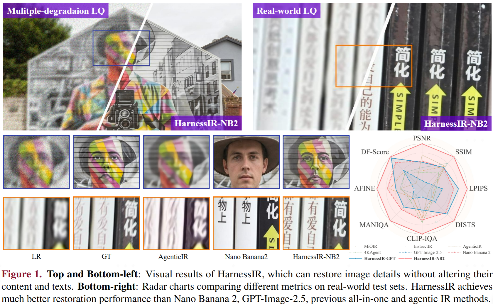
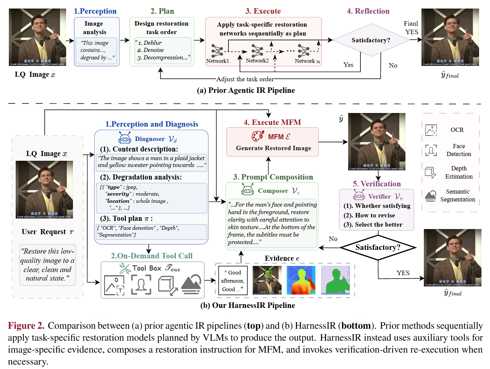
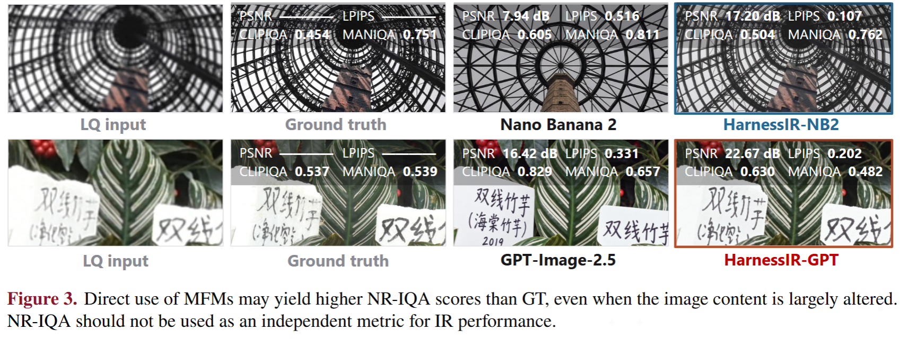
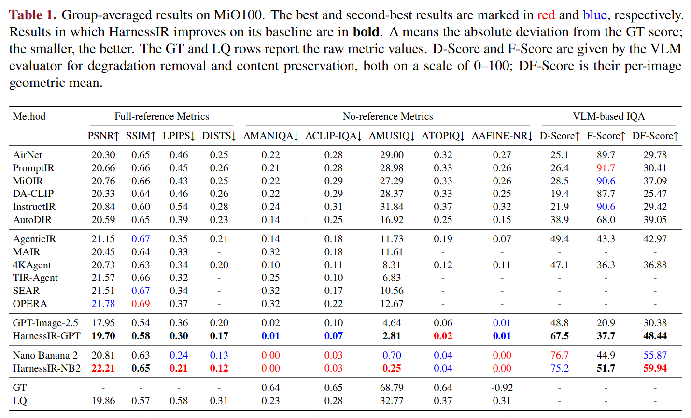
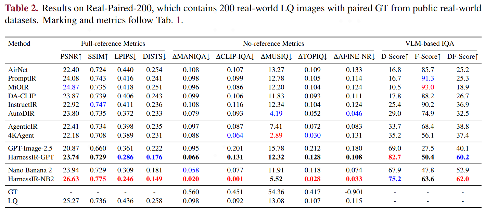
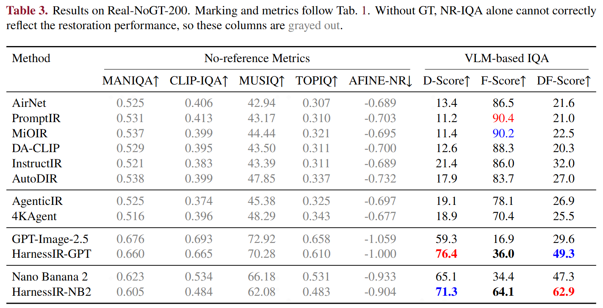
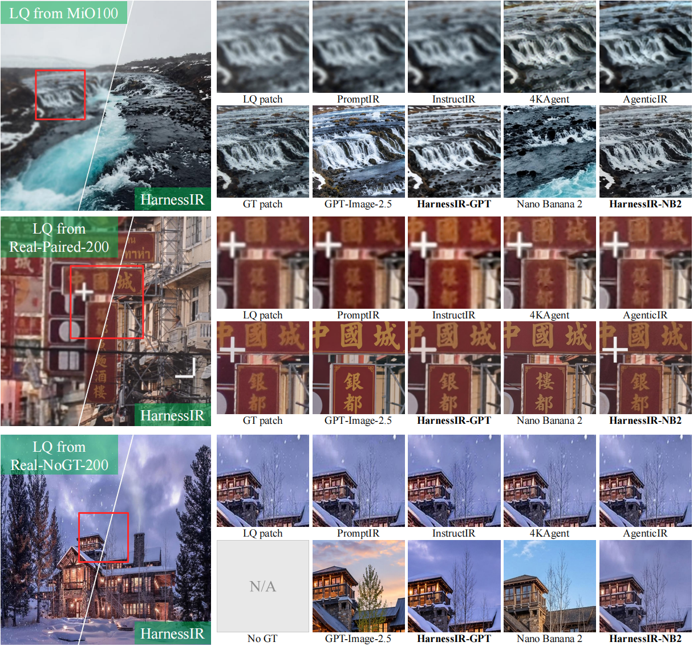
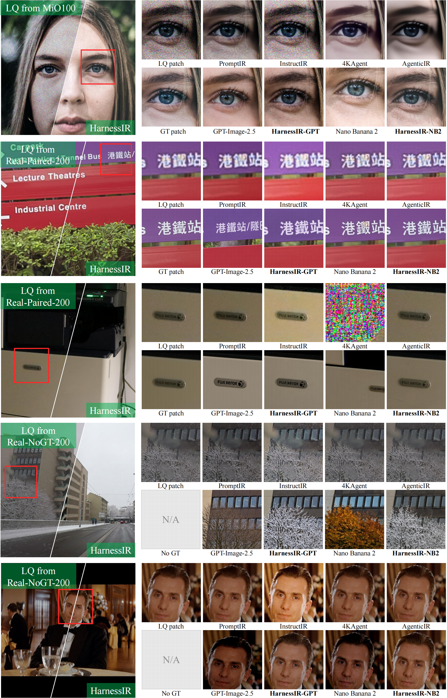

MFM as the Executor
No restoration tool is scheduled. A single MFM call performs the restoration; the harness decides what to tell it.
Restoration by instructing an MFM executor, not by scheduling restoration tools.
1 The Hong Kong Polytechnic University · 2 OPPO Research Institute
† Corresponding author

Highlights
No restoration tool is scheduled. A single MFM call performs the restoration; the harness decides what to tell it.
OCR, face detection, depth and segmentation provide evidence for writing the instruction, not links in a restoration chain.
A failed result is never propagated. The revised instruction is applied to the original LQ image.
Inference-only, using off-the-shelf VLM and image editing APIs. No component is trained or fine-tuned.
Abstract
Real-world low-quality images suffer from complex mixed degradations, including but not limited to noise, blur, atmospheric effects, etc. Recent agentic methods usually model real-world image restoration (Real-IR) as a sequential tool calling problem over task-specific single-degradation restoration models. This paradigm, however, is fundamentally limited because complex real-world degradations cannot be cleanly undone degradation by degradation, and the tool used for task-specific models caps the capability of the agent system. In this work, we present HarnessIR, an agentic framework for Real-IR by harnessing a multimodal foundation model (MFM) as the executor. HarnessIR consists of five stages: perception and diagnosis, on-demand tool invocation, prompt composition, execution, and verification-driven refinement. Unlike prior agentic Real-IR methods that rely on tool chains assembled from task-specific models, HarnessIR feeds the restoration requirements, the perceptual diagnosis, and the evidence into an MFM that performs restoration in a single pass, followed by verification stages to determine whether the result warrants further processing. Under our harness, off-the-shelf MFMs handle restoration tasks remarkably well, achieving state-of-the-art results on the widely used MiO100 synthetic benchmark. More importantly, by exploiting the strong generalization ability of MFMs, HarnessIR delivers compelling restoration quality on challenging real-world scenes where previous agentic IR systems often struggle.
Method

Prior agentic IR methods apply task-specific restoration models in sequence, and are therefore bounded by those tools. HarnessIR keeps one MFM as the executor and varies only the instruction given to it.
Experiments
HarnessIR is run with two executors under the identical harness — Nano Banana 2 and GPT-Image-2.5-Sunburst — and compared against their direct-use baselines, all-in-one models and prior agentic IR methods.
Following prior works, we measure fidelity with full-reference (PSNR, SSIM, LPIPS, DISTS) metrics and image quality with no-reference (MANIQA, CLIP-IQA, MUSIQ, TOPIQ, AFINE-NR) metrics. Since a higher NR-IQA score does not by itself indicate better restoration — a model that repaints text or fabricates structure can still outscore its own ground truth — we report the absolute deviation Δ from the GT score whenever a GT exists, and additionally use an independent VLM evaluator reporting D-Score for degradation removal and F-Score for content preservation (both 0–100), combined as their per-image geometric mean, DF-Score.

On the synthetic mixed-degradation benchmark, HarnessIR-NB2 and HarnessIR-GPT gain +1.40 and +1.75 dB PSNR over their direct-use baselines, plus +4.1 and +18.1 DF-Score points, mainly through better content preservation.

On real-world images with paired ground truth, HarnessIR-NB2 reaches 26.63 dB PSNR and a DF-Score of 62.0, while HarnessIR-GPT improves PSNR by +2.87 dB and lifts its DF-Score from 40.1 to 60.2. Both exceed the previous best DF-Score of 38.8.

On real-world images without ground truth, HarnessIR yields DF-Scores of 62.9 for NB2 and 49.3 for GPT-Image-2.5, well above the best prior result of 32.0. NR-IQA alone cannot rank these methods, as it rewards hallucinated detail even when the content has been altered.



BibTeX
% TODO: add the HarnessIR BibTeX entry